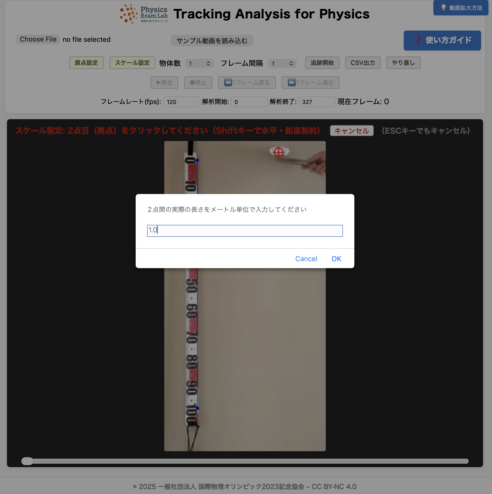

Tracking Analysis for Physics
使い方ガイド
このガイドでは、2023年共通テストで出題されたアルミカップを落とす実験を例として、解析の流れを説明します。
下図は実験のイメージです。

実際の例では、カップが5枚重ねてあります（n=5）。
1. 動画ファイルを選択・初期設定
サンプル動画で練習する場合：「サンプル動画」ボタンをクリック
ご自身の動画を使う場合：「ファイル選択」ボタンで動画（mp4, mov等）を選択
動画を開いた直後にポップアップが表示され、「フレームレート(fps)」の入力を求められます（この例では120に設定）。
動画下のスライダーで内容を確認し、必要に応じて「開始」「終了」のフレーム数も入力してください。

2. 原点・スケールを設定
原点設定
「原点設定」ボタンをクリックし、原点（例：解析開始フレームでの物体の位置）をクリックして設定します。

スケール設定
「スケール設定」ボタンをクリックし、スケールの始点と終点（例：テープメジャーの0cmと100cm）を順にクリックします。

スケール長さ入力
始点・終点をクリック後、実際の長さ（例：1.0、単位はm）を数値のみ入力します。
3. 解析条件を設定
「フレーム間隔」を入力（例：20）。この例では20フレームごとに追跡します。
「物体数」を設定（例：1）。複数の物体を同時に追跡する場合は物体数を増やしてください。
4. 追跡開始
「追跡開始」ボタンをクリックして物体の位置（例：カップの重心付近）を各フレームでクリックして記録します。
指定したフレーム間隔ごと（この例では0, 20, 40, 60フレーム目など）に赤点が記録されていきます。
5. データ出力でデータ保存
「データ出力」ボタンをクリックすると、Excel用（タブ区切り）またはCSV形式を選択できます。
選択した形式でデータが表示され、画面からコピーしてExcelやGoogleスプレッドシートに貼り付けることができます。
- フレームレート（fps）、解析開始フレーム、解析終了フレームの各入力欄には数字のみ入力してください。
- 動画の拡大・移動には、ブラウザ標準のズーム機能（Ctrl/Cmd+マウスホイール、ピンチズーム）をご利用ください
- データはローカルのみで処理され、サーバー送信はありません
- 物体数を2以上に設定すると、各フレームで複数の物体の位置を順にクリックして記録できます
【CSVデータのグラフ化と物理的考察】
書き出したデータはExcelなどで簡単にグラフ化できます。
右図は、5つ重ねたアルミカップの落下実験データをExcelでグラフ化し、データの後半（速度が安定した区間）を直線フィットした例です。
直線にきれいに乗っており、カップが一定速度で落下していることが分かります。